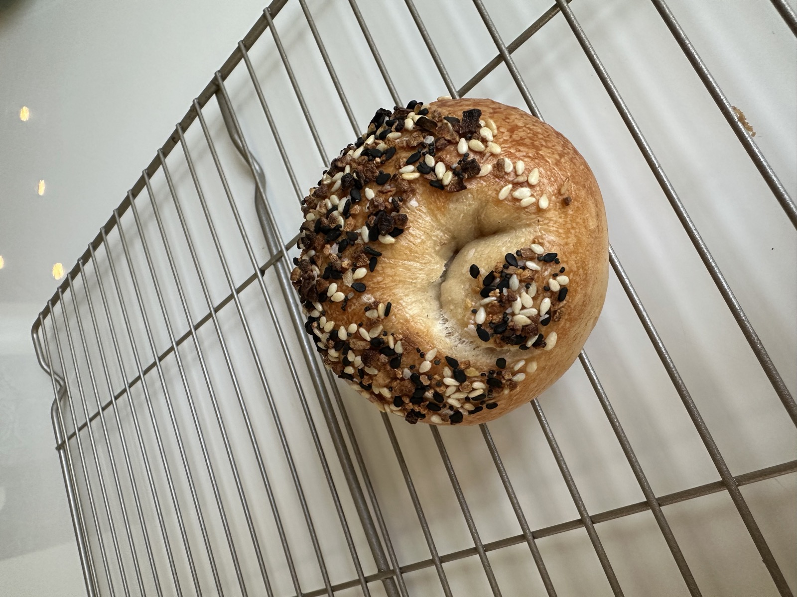
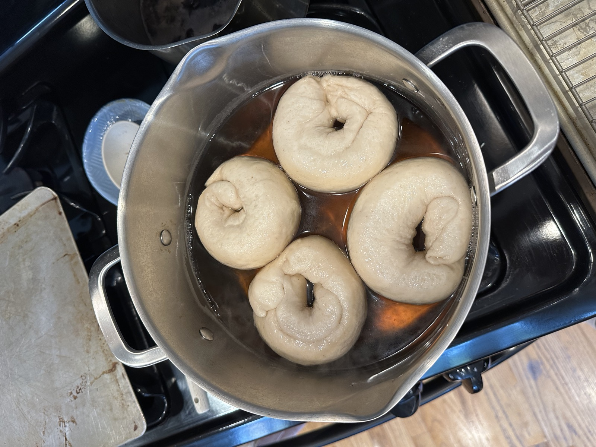
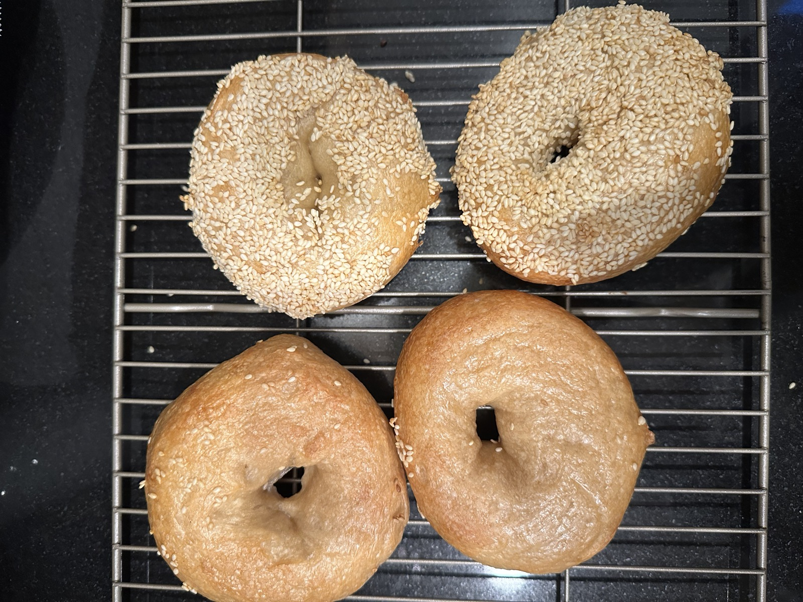
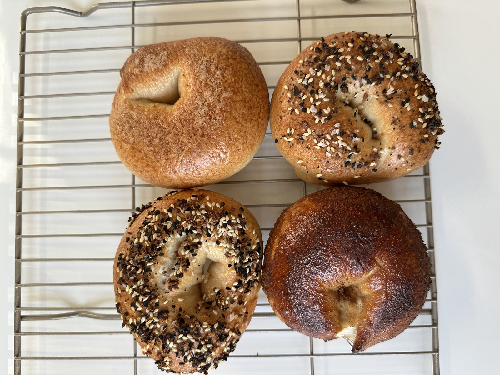
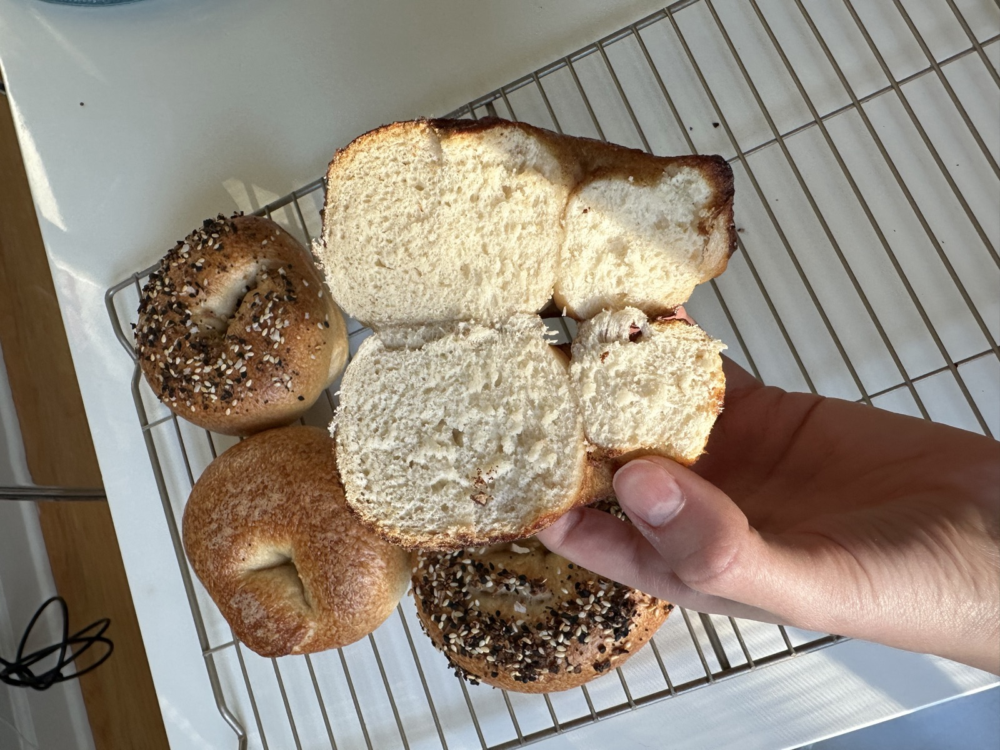
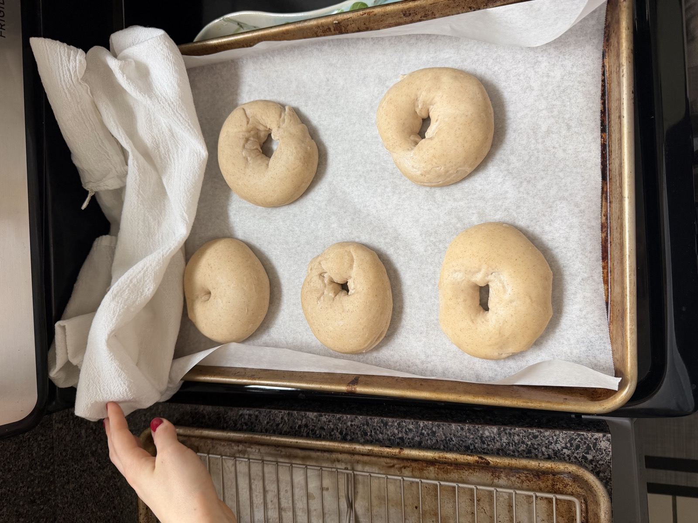
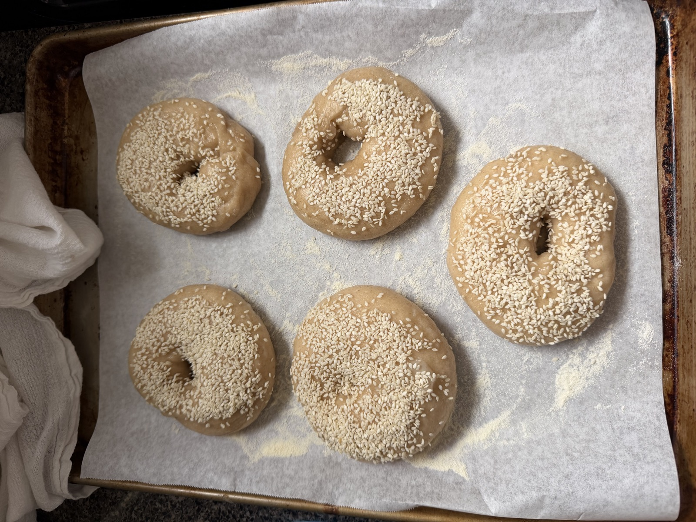
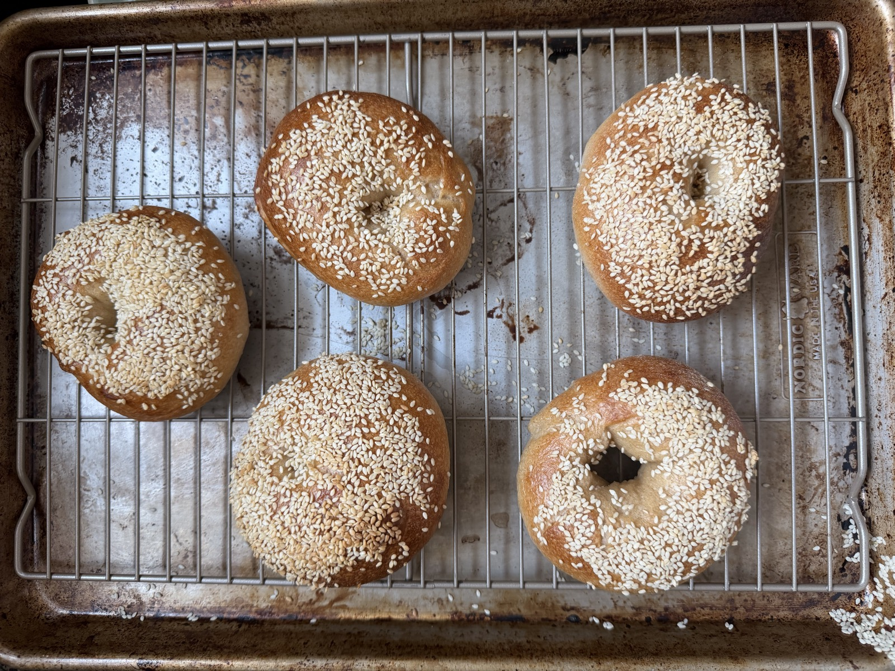

I'm a seasoned home baker who loves making breads (focaccia and ciabatta) and cookies (ask me about Krysten Chambrot's peanut butter miso recipe).
I started making bagels because I couldn't find the ones I wanted in Chicago. At the time, the only option near me was Chicago Bagel Authority. If you're unfamiliar, they make a steamed bagel, and that's definitely not what I was after. So I decided to make my own.
I went down a Reddit rabbit hole trying every recipe I could find, and landed on this one as my starting point. I've since moved on to a sourdough version, which is what I make now. Iterating on my latest bagel recipe has become a fun slow Saturday activity. Ciabatta and honey olive-oil granola are the other regulars in the rotation.
The first one I ever made was barely bigger than a golf ball. Here's the progress since then.



My first challenge after the first few batches was dialing in the malt bath timing. I had a few batches that were rolled well but I couldn't form the right crust. Their malt baths were too short.


I finally nailed the deep brown crust I was looking for and soft, chewy interior. But my shaping skills were still sub-par.
I watched a lot of youtube videos of life-long NY bagelers and many tutorials from King Aurthur. It's still a work in progress.



While I'm still working on shaping, my latest tweak has been modifying my recipe from dry yeast to sourdough. It's a bit more finicky but more rewarding.
I'm looking for full-time opportunities after HBS, and internships along the way. If something seems like a fit, I'd love to hear from you.